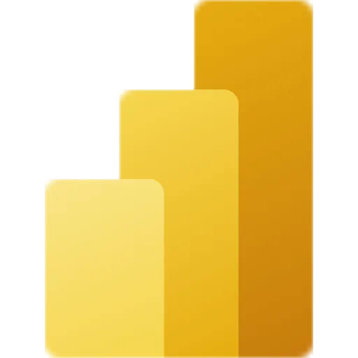
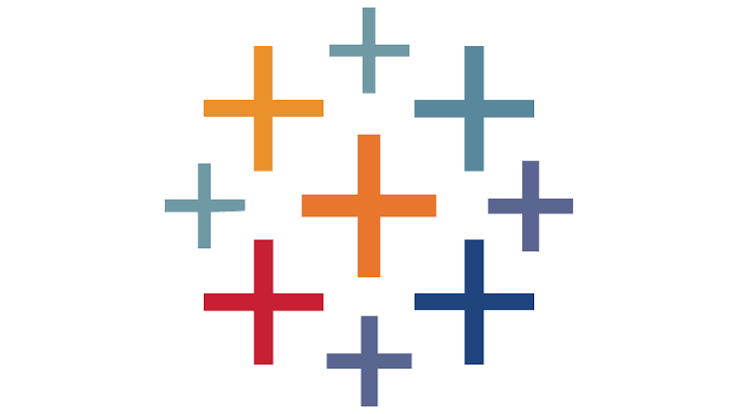
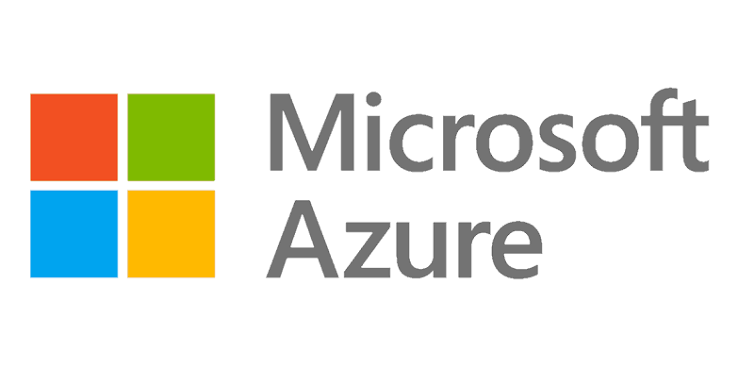

Prepare & connect
Shape complex datasets into a clear foundation for analysis and reporting.
Hi, I’m
DATA ANALYTICS & BUSINESS INTELLIGENCE
Turning complex data into clear insights that support smarter decisions. Explore my projects in business intelligence, data science, and machine learning.

Power BISQL PythonExcel
PythonExcel
Tableau
AzureA toolkit that connects data preparation, analysis, and visual storytelling.
Shape complex datasets into a clear foundation for analysis and reporting.
Explore patterns, define measures, and use forecasting to look ahead.
Bring insights into focus through readable dashboards and thoughtful visualizations.
Explore my work in business analytics, economic analysis, and public health data science.
A group project exploring purchasing behaviour across retail product divisions, using clustering to identify customer segments and inform targeted marketing.
View on GitHub →Explore purchasing power parity and currency valuation across countries, comparing Big Mac prices, GDP per capita, and raw and adjusted indices.
View on GitHub →Analyze chronic disease trends and healthcare wait times across Ontario, combining public datasets to investigate regional burden and access gaps.
View on GitHub →I’m Mamkon Mercy Oyeleke, a data analytics and business intelligence professional based in Ontario, Canada.
My focus is simple: turning complex data into clear insights that support smarter decisions. My toolkit spans Power BI, SQL, Python, Excel, Tableau, DAX, Power Query, forecasting, predictive analytics, and Azure.
Explore my GitHub ↗Explore my profile and find ways to connect on GitHub.